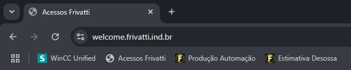
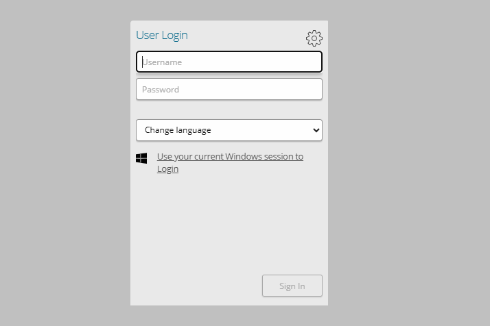
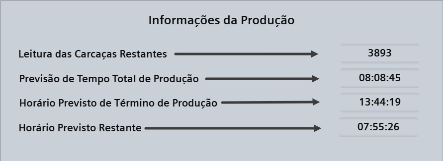

Passo a passo
Guia para Identificação do Valor Total de Carcaça no Sistema da Frivatti
Este guia foi elaborado para auxiliar novos colaboradores a localizar o valor total de carcaça no sistema da empresa Frivatti. A seguir, serão apresentados os passos detalhados para acessar o sistema, e identificar essa informação de forma clara e eficiente.
1. Acessando o Sistema de Produção Frivatti
-
1. Abra o navegador de sua preferência (Google Chrome, Edge, etc.).
-
2. Após abrir o navegador, localize a barra de favoritos (geralmente abaixo da barra de endereço).
-
3. No menu de favoritos, clique em "WinCC Unified" para abrir o sistema.
O sistema está salvo nos favoritos, conforme mostrado na imagem abaixo:
No navegador, o nome do sistema será "WinCC Unified".
Certifique-se de que o sistema carregou corretamente antes de prosseguir.
2. Realizando o Login no Sistema
-
1. Após abrir o sistema, você verá uma tela de login semelhante à imagem abaixo.

-
2. Preencha os campos com suas credenciais de acesso
Username: Digite seu nome de usuário.
Password: Digite sua senha.
-
3. Clique em "Sign In" para abrir o sistema.
3. Localizando o Valor Total de Carcaça
-
1. Após fazer login, procure pela seção chamada "Informações da Produção"
-
2. A tela exibirá diversas informações sobre a produção, conforme mostrado na imagem:

-
3. Para localizar o valor total de carcaça, consulte o campo
Leitura das Carcaças Restantes → Total de carcaças restantes na produção.
No exemplo da imagem, o valor é 3893.
4. Descrição dos Campos de Informações da Produção
| Campo | Descrição |
|---|---|
| Leitura das Carcaças Restantes | Número total de carcaças que ainda precisam ser processadas. |
| Previsão de Tempo Total de Produção | Tempo estimado para a conclusão de toda a produção. |
| Horário Previsto de Término de Produção | Hora aproximada em que a produção será finalizada. |
| Horário Previsto Restante | Tempo restante para a finalização da produção. |